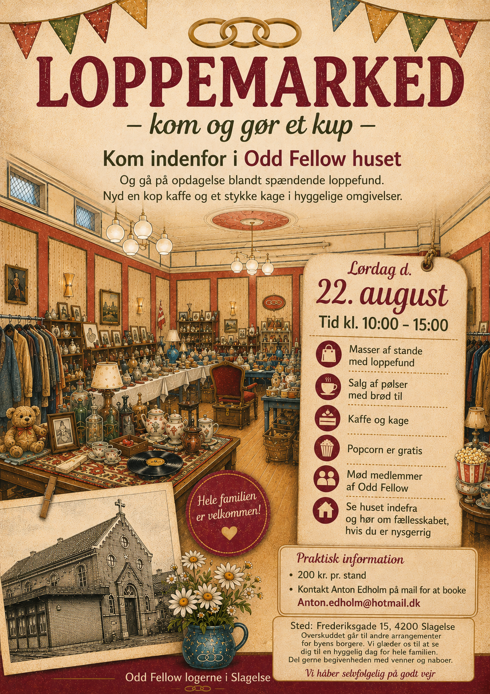
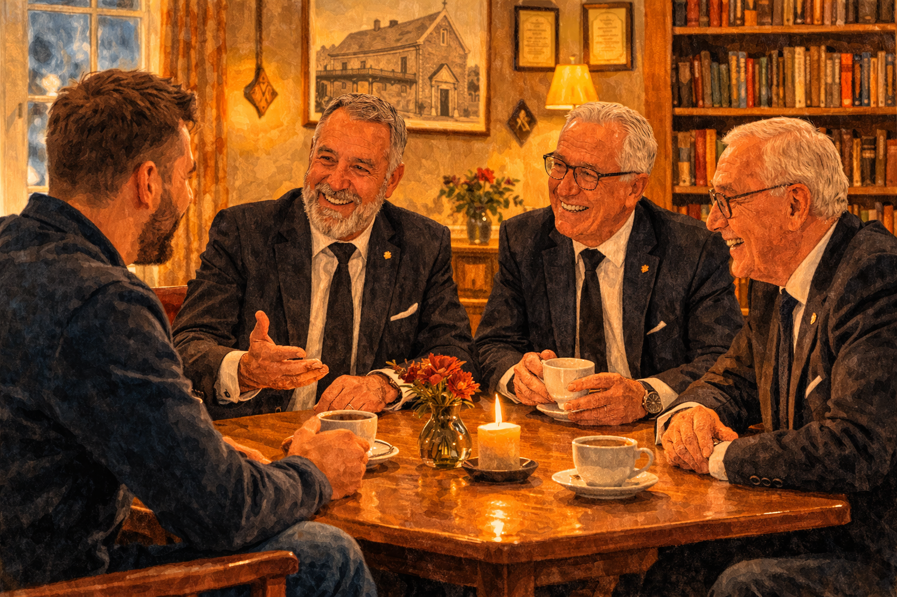

Logemøde
Her arbejder vi med ordens værdier og refleksioner over livet, mennesket og det ansvar, vi har over for hinanden.
Et fællesskab med ro, relationer og værdier – midt i Slagelse.
Odd Fellow Ordenen er en international orden med mere end 200 års historie. I Danmark er ordenen organiseret under Den Uafhængige Storloge for Kongeriget Danmark – I.O.O.F. Gennem generationer har ordenen samlet mennesker omkring et fællesskab, hvor venskab, etik og personlig udvikling er bærende elementer.
I Broderloge nr. 35 Concordia i Slagelse mødes mænd med forskellige baggrunde, erfaringer og livshistorier. Aldersspændet er bredt, og netop det giver plads til nye perspektiver, gode samtaler og relationer på tværs af generationer.
Formålet er ikke blot at mødes af vane. Vi mødes for at udvikle os som mennesker, for at styrke relationer og for at skabe et fortroligt fællesskab, hvor der også er plads til eftertanke, humor og nærvær.

Vi holder logemøde hver onsdag i vores logebygning i Slagelse. En aften i logen består som regel af flere dele, som tilsammen skaber en rytme mellem fordybelse, inspiration og samvær.
Her arbejder vi med ordens værdier og refleksioner over livet, mennesket og det ansvar, vi har over for hinanden.
Vi holder jævnligt foredrag eller oplæg om aktuelle, kulturelle eller personlige emner, som giver stof til eftertanke og samtale.
Efter mødet samles vi til en lettere anretning. Her får samtalerne lov at fortsætte i mere uformelle rammer, og det er ofte her relationerne vokser.
Møderne afsluttes normalt omkring kl. 23.00. Der holdes ikke ordinære møder i perioden 13. maj – 2. September samt 16. december – 6. januar.

For mange bliver logen et fast holdepunkt i en travl hverdag. Her er der plads til gode samtaler, venskaber, refleksion og fællesskab i rammer, hvor man mødes med respekt og fortrolighed.
Relationerne opstår over tid. Det særlige ved logen er, at man lærer hinanden at kende gennem mange møder og mange samtaler. Det skaber en anden form for nærhed end i mere overfladiske fællesskaber.
Man behøver ikke kende alt til ordenen på forhånd for at være nysgerrig. Det vigtigste er lysten til fællesskab, eftertanke og menneskelig kontakt.


Hvis du er blevet nysgerrig på logen, er du velkommen til at kontakte os.
